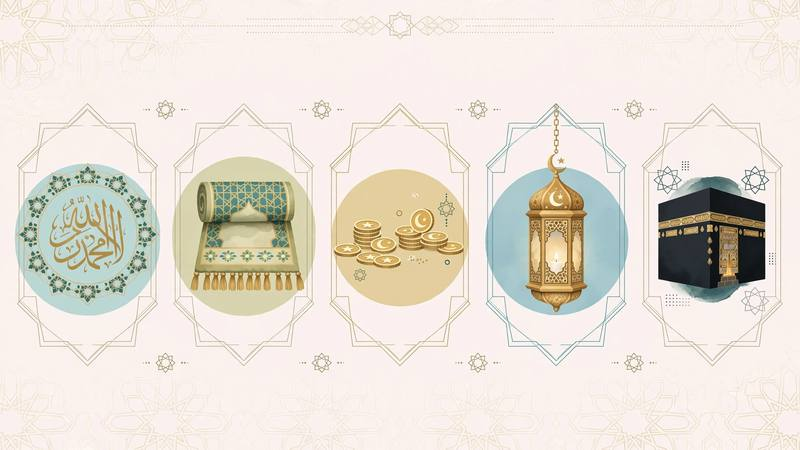

The Five Pillars of Islam Explained: Shahada, Salah, Zakat, Sawm and Hajj

The five pillars of Islam are five fundamental acts of faith and worship: Shahada (testimony of faith), Salah (prayer), Zakat (obligatory charity), Sawm (fasting during Ramadan) and Hajj (pilgrimage to Makkah). They provide a foundation for Muslim belief and practice.
The Prophet Muhammad ﷺ described Islam as being built upon five pillars in an authentic hadith reported by Al-Bukhari and Muslim. This guide explains each pillar, gives relevant Quran references and introduces key points for beginners.
Explore structured lessons in Islamic Studies and Quran learning at Al Shimaa Quran Academy.
Explore Islamic Studies →Table of Contents
- What Are the Five Pillars of Islam?
- 1. Shahada: Testimony of Faith
- 2. Salah: The Five Daily Prayers
- 3. Zakat: Obligatory Charity
- 4. Sawm: Fasting During Ramadan
- 5. Hajj: Pilgrimage to Makkah
- Frequently Asked Questions
What Are the Five Pillars of Islam?
The five pillars are the Shahada, Salah, Zakat, Sawm and Hajj. The well-known hadith about the pillars explains that a Muslim testifies to the oneness of Allah and the messengership of Muhammad ﷺ, establishes prayer, gives Zakat, fasts Ramadan and performs Hajj when able.
Each pillar has its own conditions and rulings. Learning the basics helps Muslims understand the essential practices of Islam, while detailed questions about how to perform them should be studied with reliable Islamic guidance.
1. Shahada: Testimony of Faith
The Shahada is the testimony that none has the right to be worshipped except Allah and that Muhammad ﷺ is the Messenger of Allah. It expresses the foundation of Islamic belief: worshipping Allah alone and accepting the message brought by His Messenger.
The first testimony is commonly expressed as La ilaha illa Allah, meaning that none has the right to be worshipped except Allah. The second affirms that Muhammad ﷺ is the Messenger of Allah.
The Quran emphasizes knowledge of this central belief: “So know that there is no deity except Allah” (Quran 47:19). Understanding the meaning of the Shahada is more important than simply memorizing its words without understanding.
2. Salah: The Five Daily Prayers
Salah is the prescribed prayer performed at specific times throughout the day and night. The five obligatory daily prayers are Fajr, Dhuhr, Asr, Maghrib and Isha.
Allah says that prayer has been prescribed for believers at appointed times (Quran 4:103). The Quran also commands believers to establish prayer and give Zakat (Quran 2:43).
Muslims learn the conditions of prayer, purification, required actions and recitation as part of studying how to perform Salah correctly. For further learning, explore our Islamic Studies course.
3. Zakat: Obligatory Charity
Zakat is an obligatory form of charity for Muslims whose qualifying wealth meets the applicable requirements. It supports eligible recipients and is one of the important duties of Islamic worship.
The rate of 2.5% applies to many types of qualifying monetary wealth when the relevant conditions are met. However, the calculation and conditions can differ depending on the type of asset. The rules include questions such as the Nisab threshold, the lunar year requirement where applicable and the category of wealth being assessed.
The Quran identifies categories of eligible Zakat recipients in Quran 9:60. Read our guide to the eight categories of people eligible for Zakat for a more detailed explanation.
4. Sawm: Fasting During Ramadan
Sawm refers to fasting. During Ramadan, adult Muslims who are obligated to fast abstain from food, drink and other acts that invalidate the fast from dawn until sunset.
Islamic law recognizes exemptions and specific rulings for circumstances such as illness and travel. The details depend on the situation, so anyone unsure about their own circumstances should seek qualified Islamic guidance.
Allah says in Quran 2:183 that fasting was prescribed for believers as it was prescribed for those before them, so that they may develop Taqwa, or God-consciousness.
5. Hajj: Pilgrimage to Makkah
Hajj is the pilgrimage to Makkah performed during its designated days. It is obligatory once in a lifetime for a Muslim who meets the conditions of ability, including the relevant physical and financial requirements.
Allah says in Quran 3:97 that pilgrimage to the House is a duty owed to Allah by those who are able to find a way to it. Hajj brings Muslims together in worship and includes specific rites that pilgrims learn before undertaking the journey.
How Can Beginners Learn the Five Pillars?
Beginners can study the pillars one at a time, starting with their meanings and the evidence for them. It is also helpful to learn the practical details of prayer, fasting, charity and pilgrimage from reliable sources rather than relying on brief summaries alone.
- Understand the meaning of each pillar.
- Learn the basic requirements and conditions for each act of worship.
- Study Quran verses and authentic hadith with explanations.
- Ask a qualified teacher about detailed or personal questions.
- Continue learning through structured Islamic Studies lessons.
🌙 Continue Your Islamic Studies
Explore these related guides to learn more about Islamic beliefs, worship and practice.
Frequently Asked Questions
What are the five pillars of Islam in order?
The five pillars are Shahada (testimony of faith), Salah (prayer), Zakat (obligatory charity), Sawm (fasting during Ramadan) and Hajj (pilgrimage to Makkah for those able to perform it).
Are the five pillars mentioned in the Quran?
The Quran discusses the beliefs and acts of worship associated with the pillars in many places. For example, Quran 47:19 addresses the testimony of faith, Quran 4:103 discusses prayer at appointed times, Quran 2:43 commands prayer and Zakat, Quran 2:183 addresses fasting, and Quran 3:97 addresses Hajj. The five pillars are explicitly brought together in the well-known hadith reported by Al-Bukhari and Muslim.
Is Zakat always 2.5% of a person's wealth?
No. The 2.5% rate applies to many types of qualifying wealth, subject to the relevant conditions. Different types of assets can have different rules, so the calculation should be based on the kind of wealth and the applicable Islamic rulings.
Can children learn the five pillars of Islam online?
Yes. Children can learn the basic meanings of the five pillars through age-appropriate explanations, examples and guided lessons. Parents should choose learning materials suited to the child's age and understanding.
What should I study after learning the five pillars?
A useful next step is to study the six pillars of Iman, the basics of purification and prayer, and other foundational topics in Islamic Studies. Our Islamic Studies course provides an entry point for exploring these subjects.